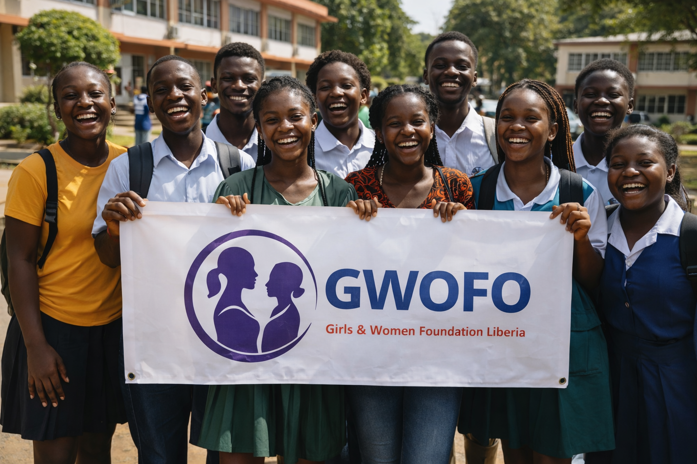

Impact at a Glance
Since our establishment in 2014 and beginning full operations in 2022, we've been making measurable differences in the lives of girls and women across Liberia.
Through our flagship "Rural Women Liveskills Empowerment Programs"
Community-based volunteers mentored on health seeking and gender responsive skills
Grand Gedeh County with expansion plans to Montserrado County
Total grants and donations received between 2020-2022
Impact by Program Area
Education and Community Awareness
Our education programs have focused on creating safe learning environments and raising awareness on critical issues affecting girls and women.
Key Achievement: School Safety Campaign
Conducted two-month outreach program in seven communities and public schools in Zwedru on safe learning environments and violence prevention against female students during and after school hours, in collaboration with the Ministry of Education.

Women's Economic Empowerment
Our flagship "Rural Women Liveskills Empowerment Programs" train women in various skills, home economy, and petit businesses to contribute to household development.
Sustainable Livelihood Development
Since 2016, we have been running regular skills training programs that have equipped women with practical skills for economic independence and household development, creating sustainable change in their communities.
.jpg)
Health and COVID-19 Response
Our health programs have increased awareness and response to COVID-19 and other health issues, particularly focusing on vulnerable communities.
Community Health Initiative
Collaborated with Grand Gedeh County SGBV Task Force with support from UN-Women to create awareness on COVID-19 and other health-related issues in ten communities across two administrative districts (Tchien & Cavalla) of Grand Gedeh County.

Advocacy and Land Rights
Our advocacy work focuses on women's inclusion, land rights, and eliminating violence against women and girls.
Land Rights and Women's Inclusion
Implemented a four-year project on "Strengthening Local Structures to Increase Awareness and Sustain Interventions that Promotes Women and Youth Land Ownership and Decision-making in Land Administration and Management" in Grand Gedeh County with funding from Forum Civ Liberia.

Geographic Reach
Our impact focuses on Grand Gedeh County with expansion to Montserrado County, with programs tailored to meet specific community needs.
Grand Gedeh County
Flagship programs in women's empowerment, health awareness, and land rights advocacy
Tchien District
Focus on health awareness and community mobilization
Cavalla District
Health awareness and community engagement initiatives
Zwedru City
Education outreach and women's empowerment programs
Program Highlights
Key achievements and collaborative initiatives from our work.

Rural Women Liveskills Empowerment
Grand Gedeh County
"Since 2016, our flagship program has trained women in different skills, home economy, and petit businesses to contribute to household development, benefiting over 30 young and elderly women."
Food Security Initiative
Grand Gedeh County
"Collaborated with Caritas Cape Palmas and World Food Program-Liberia through grant provision for implementation of the Government of Liberia's Household Food Support Program during COVID-19."
Annual Reports
Access our detailed annual reports documenting our achievements and progress.
2022 Annual Report
Comprehensive overview of our achievements and metrics from 2022, our first year of full operations.
Download PDF2020-2022 Impact Summary
Summary of performance and gains made through funding and technical supports during 2020-2022.
Download PDFOrganization Profile
Detailed profile document of GWOFO-Liberia including vision, mission, and strategic objectives.
Download PDF